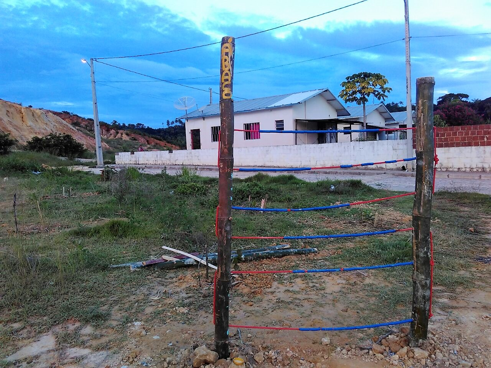
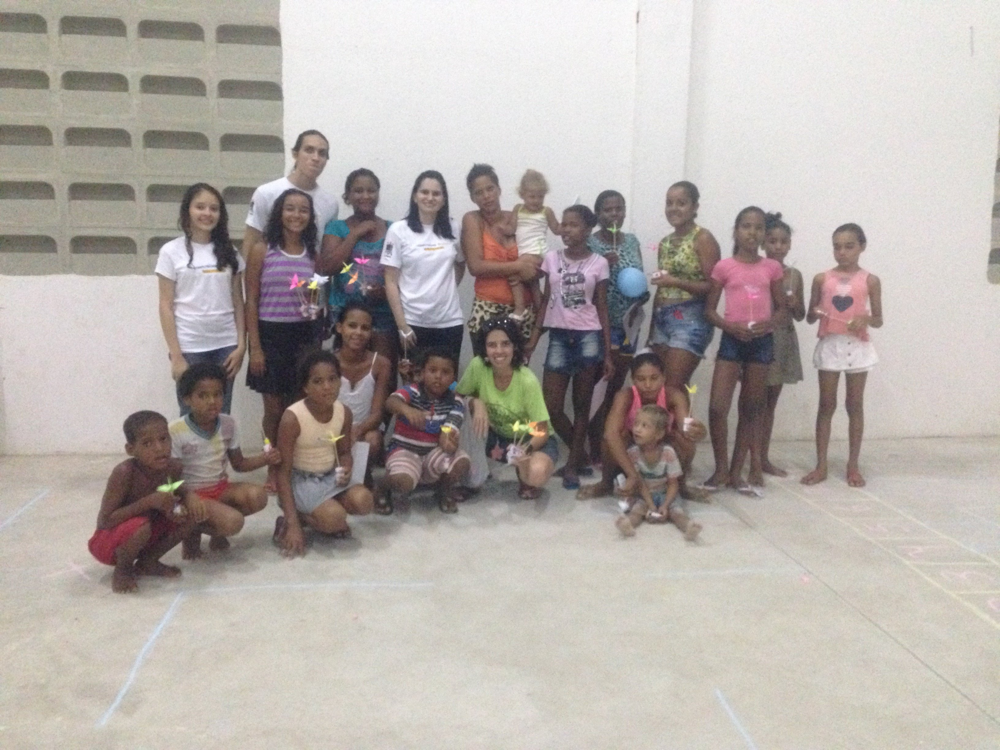

Oficinas e Imersões




O projeto propõe a articulação das áreas de computação e educação, fortalecendo a relação Universidade e Sociedade, e promovendo a interdisciplinaridade.Nossa motivação do trabalho surge do interesse em ofertar oficinas de Computação Desplugada, a fim de favorecer o processo de ensino-aprendizagem colaborativo fundamentado nos pilares da inclusão social e digital
Nosso objetivo consiste em abordar atividades educacionais lúdicas de raciocínio lógico e tópicos fundamentais de Ciência da Computação sem o uso de computadores, buscando estimular a resolução de problemas, colaboração, pensamento analítico, tomada de decisão e criatividade dos estudantes da educação básica dos ensinos fundamental e médio da região metropolitana do Recife; e jovens das comunidades do entorno do complexo industrial portuário de Suape.
A metodologia do projeto baseia-se no Toolkit Human Centered Design, cujo foco da ação são as pessoas, tendo como ciclo de desenvolvimento as fases Hear, Create e Deliver. A metodologia também está respaldada no projeto “Computer Science Unplugged”, que consiste em uma coleção de atividades didáticas sobre fundamentos da computação, cuja abordagem independência de recursos de hardware ou software. Assim, as atividades desplugadas podem ser aplicadas em localidades remotas e/ou com infraestruturas deficitárias.
Alunos presentes
escolas visitadas
imersões em Tatuoca